Suivi
Semaine 2
Jeu avec apprentissage de règles
Projet initial :
On a pour but de créer un jeu qui apprend seul, en modifiant ses règles pour les rendre optimales suite à plusieurs itérations. Pour ce faire, on a pour but de créer un jeu proie/prédateur avec un chasseur qui doit attraper le lapin qui représentera l'IA et lui doit se rendre dans son terrier. Il sera complexifié au cours du temps.
Phase 1 : Création du jeux et des règles initiale
Structures utilisées pour la gestion des règles et de notre joueur
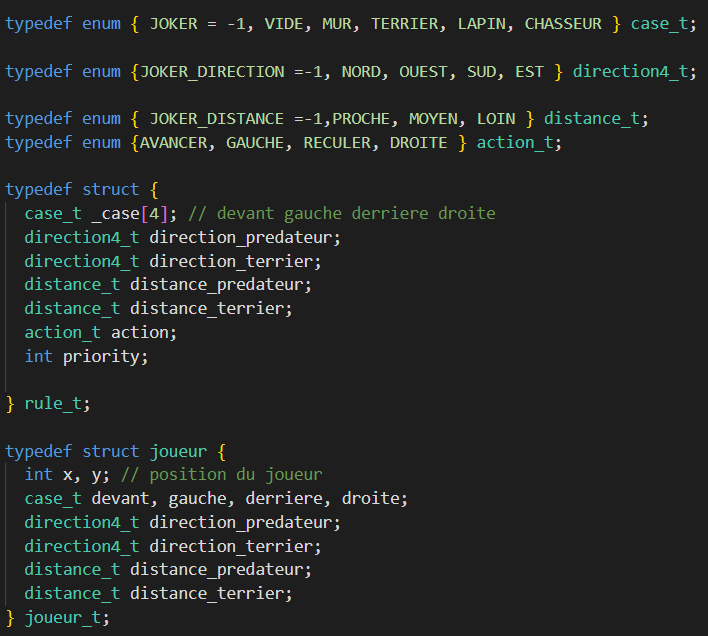On a défini alors 4 enum qui couvrent toutes nos perceptions définies dans nos règles, on les incorporera dans 2 structures, rules_t et joueur_t.
Règles définie initialement
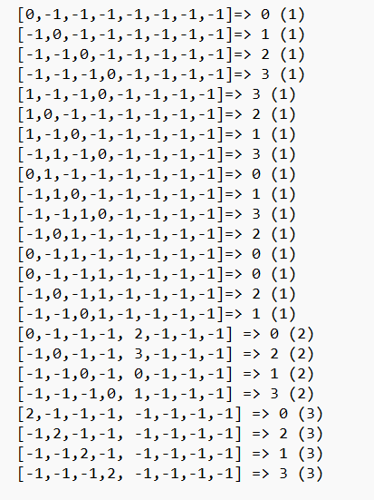On a défini initialement 24 règles que respectera notre lapin pour se déplacer dans la map que l'on a généré.
Génération de terrain
On crée des patterns aléatoires tout en faisant attention qu'il existe au moins un chemin possible (pour se faire on utilise l'algorithme de Dijkstra pour savoir si il y en a un entre le lapin et le terrier). On a généré des maps de taille 12,25,50 et 150 respectivement. On remarque que l'on doit se limiter à des petites maps au vu de la taille de nos personnages et du nombre d'itérations de jeu que l'on va avoir.
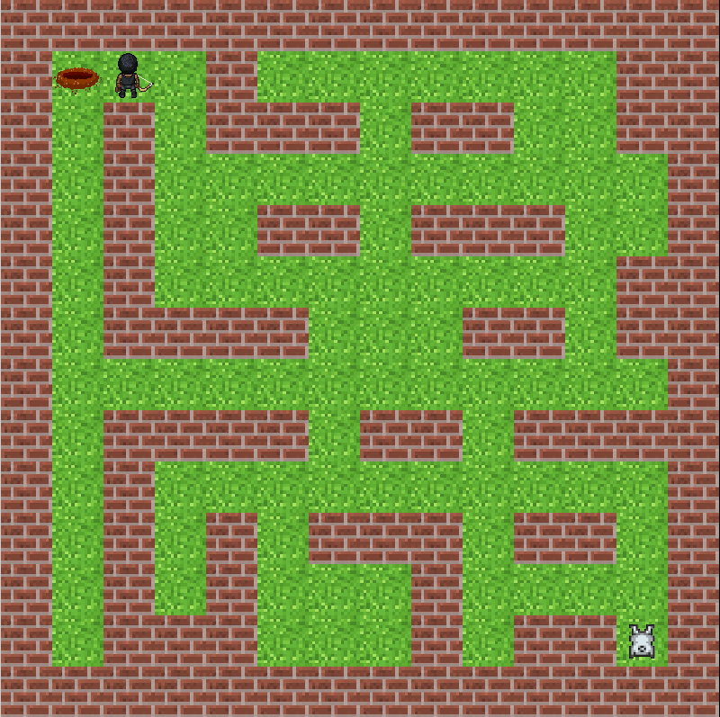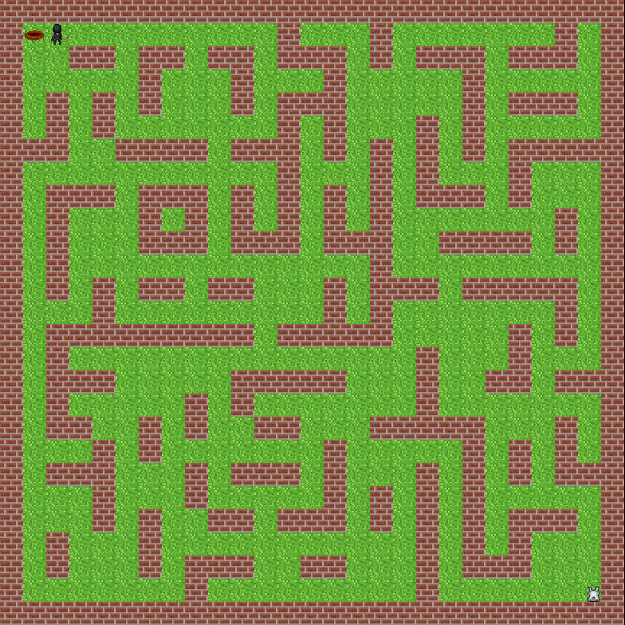

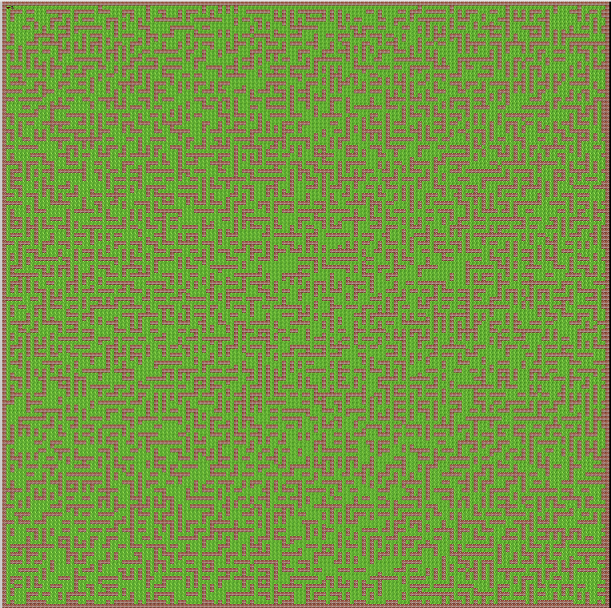
Algorithme de Dijkstra
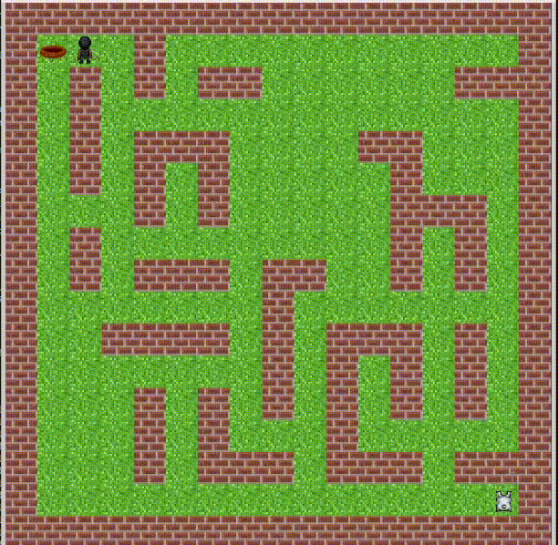Grâce à cet algorithme, on obtient le plus petit chemin entre le chasseur et le lapin, le tout très rapidement.
Déplacement du chasseur
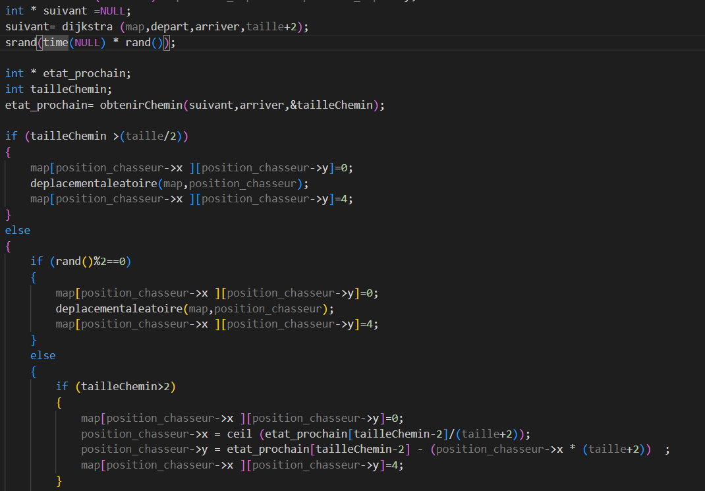Pour le déplacement du chasseur, on définit et l'on utilise l'algorithme de Dijkstra qui nous donne le plus court chemin. Ainsi, lorsque le chasseur se trouve à plus de (taille de notre map/2) il ignore Dijkstra et se déplace aléatoirement. Lorsque le lapin rentre dans sa zone de détection, il y a une chance sur 2 qu'il suive Dijkstra.
Rendu Phase 1

Voici le premier rendu du jeu, où le lapin suit ses règles initiale.
Résultat de nos règles initiale
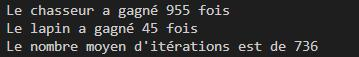On va donc chercher à les améliorer lors de la phase 2.
Phase 2 : Amélioration de notre IA
Mise en place de la possibilité de jouer notre jeu
Dans le but de se rendre compte de ce que l'on attend du lapin, on a rendu les jeux jouables avec les flèches directionnels.

3 types de lancement de jeux pour nos test
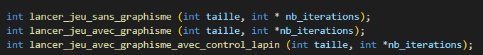Pour pouvoir tester nos différents set de règles/optimiser un set de règles on utilisera le mode sans graphisme pour pouvoir faire de nombreux calculs très rapidement. Le mode avec graphisme sera très utile pour voir le déplacement du lapin lors d'une exécution.
Génération des nouvelles règles
Méthode 1: Génération aléatoire de règles
On génère un jeu de règles aléatoire, on le teste 10 fois et si le lapin gagne parmi les parties,
on garde le jeu de données dans un fichier.
Attention, lors de la génération des règles, il faut faire en sorte que les règles
qui ne peuvent pas arriver ne soit pas présente (exemple : 2 terriers, un lapin, etc.)
Lorsque que l'on avait trouvé plusieurs jeux de règles « potentiellement » acceptable, nous les testions une centaine de fois pour avoir un pourcentage de réussite pas jeu. Pour accélérer le processus de génération et de teste de jeu de règles, nous avons implémenté le multithreading et ainsi espérer trouver un résultat satisfaisant le plus rapidement possible.
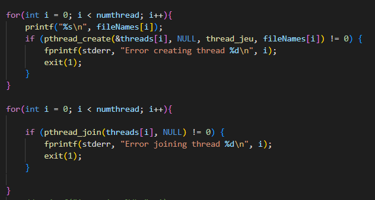
thread_jeu: Génère des jeux de règles tant que le lapin perd une partie, lorsque qu'il gagne, on enregistre les règles et l'on quitte le thread.
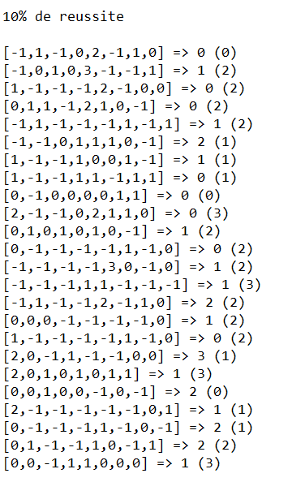
Voici l'un des jeux de donnée que nous avons trouvés
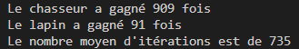
Résultat sur 1000 itérations
À ce moment, ce résultat est le meilleur obtenu.
Méthode 2: Génération de règles par une méthode gloutonne
Le principe de l'algorithme est de tirer au hasard une règle puis tirer dans celle-ci au hasard un paramètre. On va évaluer le jeu de règles en remplaçant le paramètre tiré par tous les autres possibles ( dans un premier temps on l'évalue une centaine de fois).
On garde celui qui a fait le plus gros score en moyenne pour l'insérer dans notre jeu de règles. On réintère ce processus jusqu'à ce qu'on ait testé les 240 paramètres possibles pour notre jeu de règles. Cet algorithme nous créera alors après de nombreux appels un jeu beaucoup plus performant.
Erreur d'amélioration de nos règles
Lors de notre première tentative d'amélioration des règles de notre lapin, on a obtenu un groupe de règles qui nous donnaient un lapin peureux qui fait que reculer où ne pas bouger du tout. Cela venait de notre fonction qui attribuait des points (énergies), on favorisait trop la survie contrairement au fait d'atteindre le terrier.
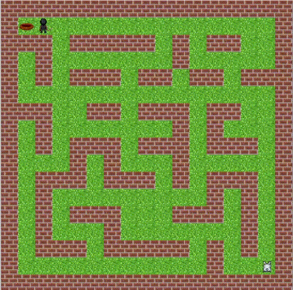Structure nécessaire pour le passage en multithreading
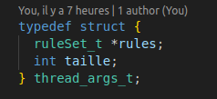Pour pouvoir passer en multithreading on a dû créer une structure pour regrouper tous nos arguments en un, car le multithreading n'accepte qu'un seul argument.
Jeu de règles obtenu avec une seed fixe
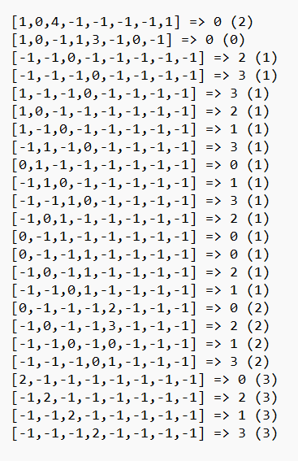On avait supposé qu'avec un seul et même terrain notre lapin apprenait beaucoup mieux, cependant avec un test de 1000 itérations pour tester une dernière fois le jeu, après que l'algorithme glouton nous l'ait créé, le lapin. n'a pas gagné 1 seule partie.
Jeu de règles obtenu en dernier avec l'algorithme

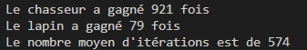
Voici notre dernier jeu de règles obtenu par notre algorithme. Il n'est pas encore optimal avec un taux de réussite de 8 %.
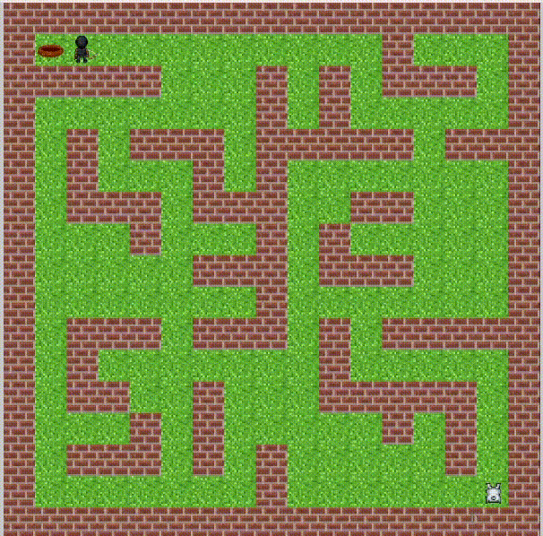
Les résultats de l'apprentissage nous montrent que le lapin se dirige très franchement vers le nord-est, ce qui semble cohérent. Cependant, il ne sait pas tourner à droite ou reculer lorsqu'il est bloqué dans un coin.
Sur quelques parties il nous montre des aspect intérressant pour la suite.
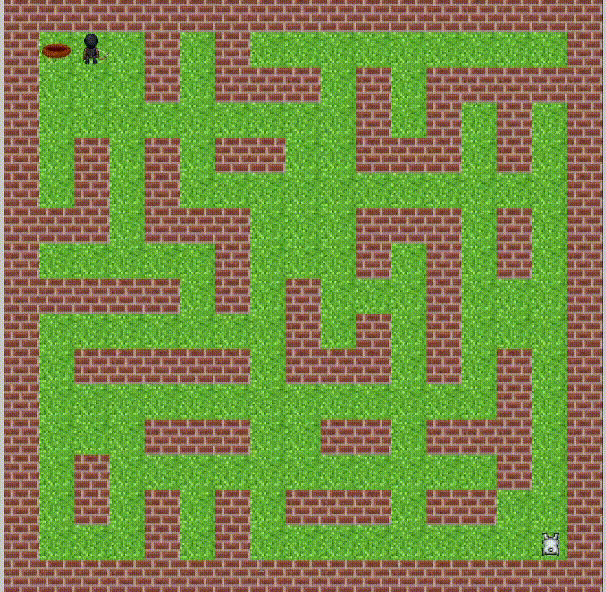
Git/Gource
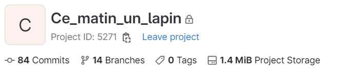
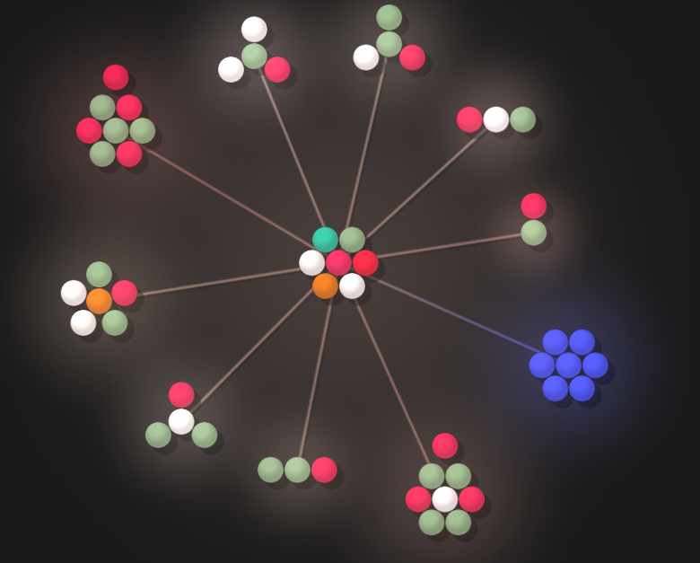
Petite pensée pour nos ordinateurs
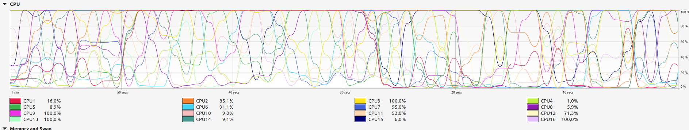
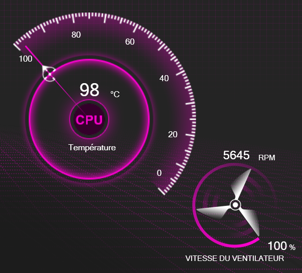